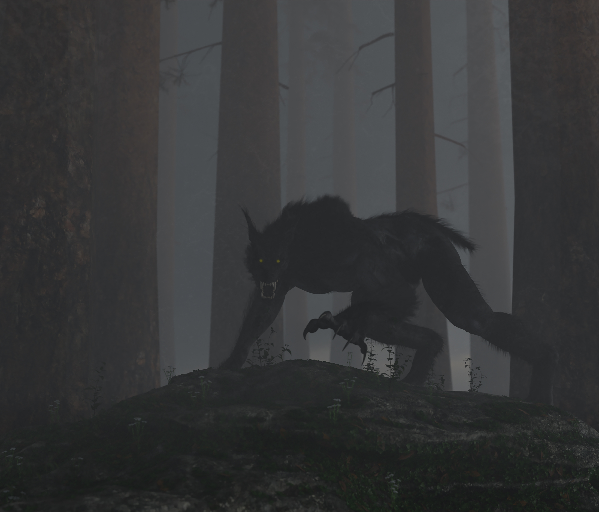

It's not the time or place for you to get involved in whatever is going on. You've always been focused and absolute. You continue through the thicket. After a bit of travel, you no longer hear anything outside of typical sounds of the forest.
Feeling at ease, you continue. But as you do, it begins to feel like the wood is getting deeper and
darker which should be
impossible without a denser canopy above. But as you look up at it, everything seems to be relatively
unchanged and quiet.
All at once you notice that the sounds of all creatures have stopped.
You feel a chill run down your spine. You begin to feel like you're being watched.
The sharp snapping of branches cuts through the silence. You had let your guard down for too long.

Despite this, you were almost able to unsheathe your axe before a large werebeast completed its ambush. You let out a visceral yell as its claws bare down into your flesh. You're pressed into the earth by this great beast. You struggle but manage to get your hand around the grip and through it up in time to protect your face from being mauled. With your blade in its teeth, you manage to do some damage. Enough for it to retreat. But even with a bloodied mouth, a feral doesn't often give up a fight. But this is the exact type of fight your training has prepared you for.
You fight back with everything you have. You end up bloodied but alive. Unfortunately, you couldn't finish the job and the creature managed to escape. You check to see if your bolbaena blossom survived. The flower is completely pulverized, anything left of it has turned brownish black like the color of old blood. You let out a defeated breath realizing you are that much further from finishing ritual.